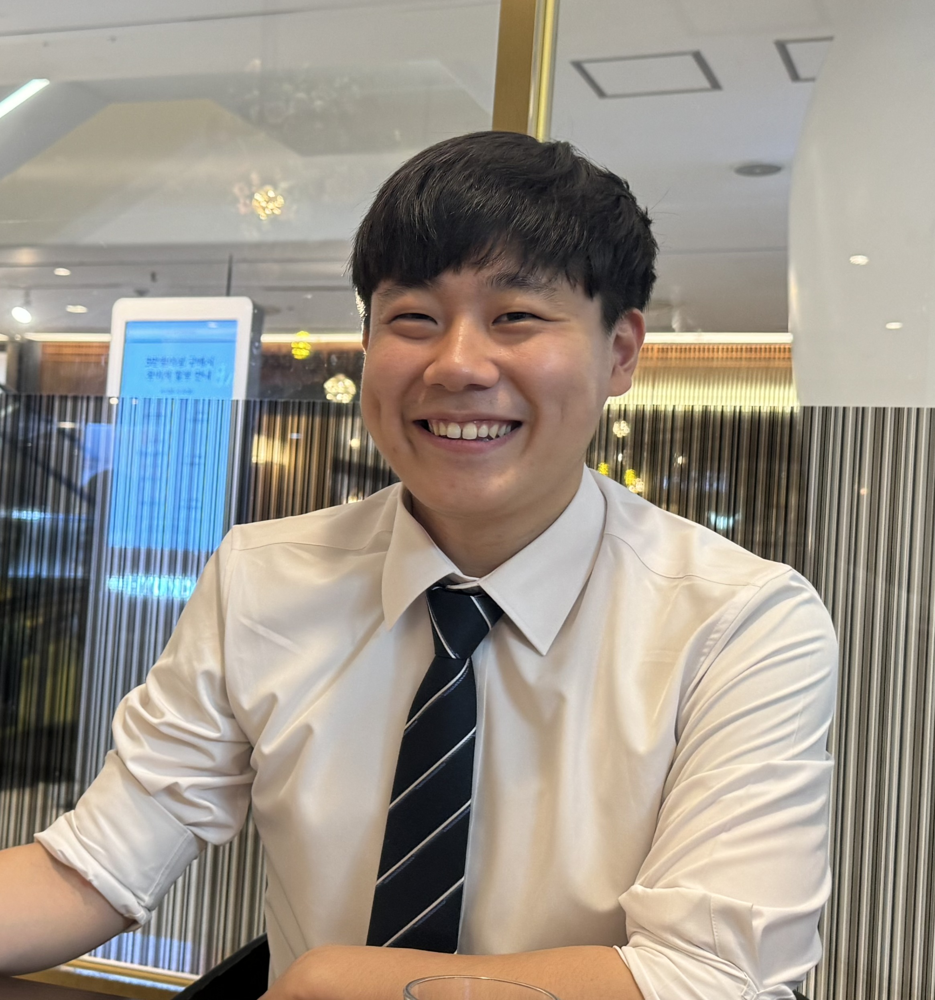

M.S., Naval Architecture & Ocean Engineering
Seoul National University (SNU)
Production Engineering Lab (PEL)
Google Scholar:
Seung Woo Han
GitHub:
SeungwooHH11
Email: nimp91 @ snu.ac.kr
Phone: (+82) 010-7154-9715
Curriculum Vitae
Research Interests 💡
Focus: Simulation-based modeling · Complex engineering systems · System optimization
Expertise: Sequential decision-making · Reinforcement learning · Graph neural networks
M.S. Thesis: Graph Reinforcement Learning for Integrated Optimization of Shipyard Hull-Block Logistics
Current Work: Current-Aware Rendezvous Planning for Multiple Patrolling USVs under Heading-Constrained
I received my M.S. in Naval Architecture and Ocean Engineering from Seoul National University (SNU), where I worked in the Production Engineering Laboratory (PEL) under the supervision of Prof. Jong Hun Woo.
My previous research has focused on simulation-based modeling and optimization of complex engineering systems, with applications to industrial logistics, scheduling, and maritime market modeling. In these studies, I have applied reinforcement learning and graph neural networks to model complex system interactions and support sequential decision-making. Through this work, I have developed a broad interest in understanding and optimizing the dynamics and decision-making processes of engineering systems.
More recently, my research interests have expanded toward optimal control, system modeling, and learning-based decision-making. I am particularly interested in combining optimization and learning-based approaches to address complex real-world systems. I am also motivated to explore new engineering domains and methodologies beyond my previous research areas.